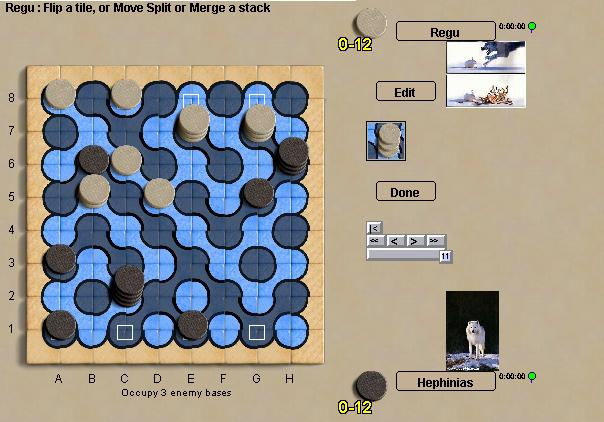

Truchet
Truchet est un jeu de piles basé sur un plateau constitué
de tuiles de Truchet. Il n'y a qu'un seul type de tuiles. Celles-ci
peuvent être tournées, retournées pour former un
pavage du plan. Dans le jeu, les tuiles peuvent être
retournées afin de reconfigurer le schéma du plateau, ses
îles et ses rivières. Les piles de pions se
déplacent le long des rivières, se séparent ou se
réunisent pour former de nouvelles piles sur l'autre couleur de
fond. Le jeu est joliment complexe, avec beaucoup d'options pour le
joueur et une grande nécessité de planification de ses
coups.
Important : le jeu est
tout nouveau, aussi ses règles précises sont encore
susceptibles d'être modifiées. Sur Boardspace, le but du
jeu est d'atteindre trois des quatres cases de base de l'adversaire
(marquées d'un carré). On peut aussi gagner en capturant
tous les pions adverses, comme dans la description initiale de Cameron.
Robots : il est un peu
tôt pour en juger ... mais les robots me semblent plutôt
bons !
|

|